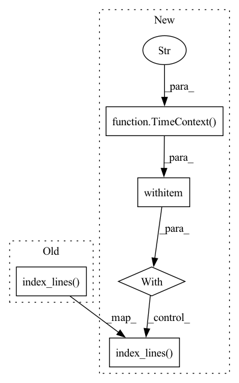

Pattern ID :10380

Before Change
with f:
print(f"Indexing {os.environ["JINA_DATA_FILE_1"]}")
data_path = os.path.join(os.path.dirname(__file__), os.environ.get("JINA_DATA_FILE_1", None))
f.index_lines(filepath=data_path, request_size=16, read_mode="r", size=num_docs)
with f:
print(f"Indexing {os.environ["JINA_DATA_FILE_2"]}")
data_path = os.path.join(os.path.dirname(__file__), os.environ.get("JINA_DATA_FILE_2", None))
After Change
f.logger.info(f"Indexing {os.environ["JINA_DATA_FILE_1"]}")
data_path = os.path.join(os.path.dirname(__file__), os.environ.get("JINA_DATA_FILE_1", None))
num_docs = min(num_docs, len(open(data_path).readlines()))
with TimeContext(f"QPS: indexing {num_docs} (1)", logger=f.logger):
f.index_lines(filepath=data_path, request_size=16, read_mode="r", size=num_docs)
with f:
f.logger.info(f"Indexing {os.environ["JINA_DATA_FILE_2"]}")
data_path = os.path.join(os.path.dirname(__file__), os.environ.get("JINA_DATA_FILE_2", None))
In pattern: SUPERPATTERN
Frequency: 3
Non-data size: 5
Instances
Fragment ID: 36322202
Project Name: jina-ai/examples
Commit Name: dc36fee6c43ef11c33354b58c79af6ce11fae6ff
Time: 2021-05-10
Author: 51201318+slettner@users.noreply.github.com
File Name: wikipedia-sentences-incremental/app.py
M Class Name: AnonimousClass
N Class Name: AnonimousClass
M Method Name: index(1)
N Method Name: index(1)
M Parent Class:
N Parent Class:
M File Name: wikipedia-sentences-incremental/app.py
N File Name: wikipedia-sentences-incremental/app.py
M Start Line: 41
M End Line: 46
N Start Line: 38
N End Line: 54
'>
Before Change
with f:
data_path = os.path.join(os.path.dirname(__file__), os.environ.get("JINA_DATA_FILE", None))
f.index_lines(filepath=data_path, batch_size=16, read_mode="r", size=num_docs)
def query(top_k):
f = Flow().load_config("flows/query.yml")
After Change
with f:
data_path = os.path.join(os.path.dirname(__file__), os.environ.get("JINA_DATA_FILE", None))
num_docs = min(num_docs, len(open(data_path).readlines()))
with TimeContext(f"QPS: indexing {num_docs}", logger=f.logger):
f.index_lines(filepath=data_path, batch_size=16, read_mode="r", size=num_docs)
def query(top_k):
f = Flow().load_config("flows/query.yml")
'>
Fragment ID: 36322200
Project Name: jina-ai/examples
Commit Name: dc36fee6c43ef11c33354b58c79af6ce11fae6ff
Time: 2021-05-10
Author: 51201318+slettner@users.noreply.github.com
File Name: wikipedia-sentences/app.py
M Class Name: AnonimousClass
N Class Name: AnonimousClass
M Method Name: index(1)
N Method Name: index(1)
M Parent Class:
N Parent Class:
M File Name: wikipedia-sentences/app.py
N File Name: wikipedia-sentences/app.py
M Start Line: 60
M End Line: 60
N Start Line: 60
N End Line: 65
'>
Before Change
with f:
data_path = os.path.join(os.path.dirname(__file__), os.environ.get("JINA_DATA_FILE", None))
f.index_lines(filepath=data_path, batch_size=16, read_mode="r", size=num_docs)
def index_restful(num_docs):
f = Flow().load_config("flows/index.yml")
After Change
with f:
data_path = os.path.join(os.path.dirname(__file__), os.environ.get("JINA_DATA_FILE", None))
with TimeContext(f"QPS: indexing {num_docs}", logger=f.logger):
f.index_lines(filepath=data_path, batch_size=16, read_mode="r", size=num_docs)
def index_restful(num_docs):
f = Flow().load_config("flows/index.yml")
'>
Fragment ID: 36322201
Project Name: jina-ai/examples
Commit Name: 460a2d0da44fe733db094cfa0f4abb8cdbc52a34
Time: 2021-05-06
Author: tobias.jacobowitz@jina.ai
File Name: chinese-text-search/app.py
M Class Name: AnonimousClass
N Class Name: AnonimousClass
M Method Name: index(1)
N Method Name: index(1)
M Parent Class:
N Parent Class:
M File Name: chinese-text-search/app.py
N File Name: chinese-text-search/app.py
M Start Line: 39
M End Line: 39
N Start Line: 40
N End Line: 42